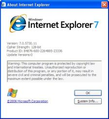

After an interesting experience with a user's IE7, thought it will be fruitful to do some test driving myself.
Installed the final version of Internet Explorer 7, it took a long time as it was running a check for malicious software

Looks different, a cleaner user interface. The biggest change is the tabbed browser windows, very much like Netscape and Firefox. Favorites and history stumped me for a while, finally realised that sub folders I have to click to expand.
The famous padlock icon on the status bar located way down at the bottom of window has been moved to the top next to the address bar. When an SSL session is in progress, it is situated next to the Refresh icon.
IE7 comes with a build in RSS reader. The other RSS readers never got through the ISA2000 firewall. Well a quick test with The Gadgeteer website shows it is able download the feeds.
A realy cool feature is Search feature and custom search provider. You configure to search Google or Yahoo other than the default Windows Live. The cool part is that you can add the search engine of any website as a custom provider. Lets say you do a lot of searches in Technet, Wikipedia or even your Intranet search engine. Just follow the link "Find more provider", the instructions on the web page on how to create custome provider and you are done!